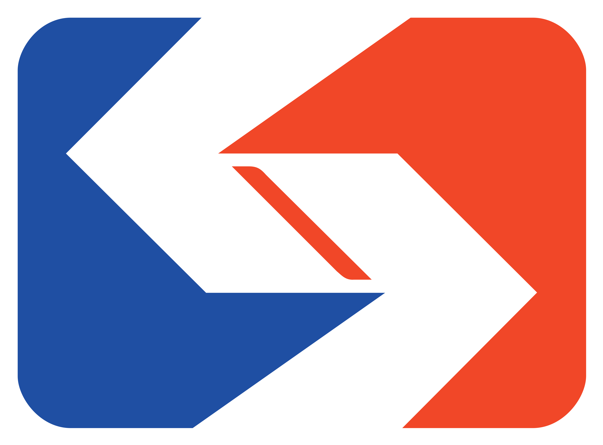

Schedules
Select a direction and required departure stop to view schedule information; an optional destination or date can further refine the results.

Original interface: SEPTA Market-Frankford Line schedules
What rules determine how each microinteraction behaves?
Hover: hovering over a direction or stop control shows its temporary hover state without changing the selected trip. Moving the pointer away removes that state.
Direction: Eastbound and Westbound are mutually exclusive options. Clicking one selects it, clears the other, and sets the travel direction used for the stop choices.
Departure and Destination: Departure is required and Destination is optional. Clicking either “Select a stop” field opens a stop-picker dialog for that field, with a search box and a list of stops for the selected direction. Typing filters the list; clicking a stop fills the corresponding field and closes the dialog. Clicking Close dismisses the picker without changing that field.
Date: clicking the date field opens the date control. Choosing a date closes or updates the control and changes the trip date shown in the field.
Schedule results: after the required direction and departure are set, schedule information is shown for the default or selected date. Destination can further narrow the trip but may be left blank, and Date can be changed as needed. Changing a selection updates the schedule area. The page indicates when live trip data is unavailable for the line.
Hover: hovering over the Alerts control or an expandable advisory gives temporary hover feedback without opening the dialog or changing the advisory’s expanded state. Moving away removes the hover state.
Open: clicking Alerts opens an overlay dialog titled “Alerts & Advisories” for the selected line. The dialog contains a vertically scrollable list. Each entry identifies whether it is an Alert or Advisory, shows its status (such as Active, Upcoming, or Past), and displays a summary.
Expand an advisory: advisory rows have a chevron. Clicking the row or chevron reveals the advisory’s additional details and changes the chevron to indicate it is expanded. Clicking the row again hides the details and returns it to its collapsed state. Alert summaries without a chevron remain displayed as list entries.
Browse and close: scrolling within the dialog reveals more notices. Clicking the Close button dismisses the overlay and returns to the schedule page.
Zoom controls: a plus (+) button zooms in to show more detail of the transit line and surrounding areas, while a minus (−) button zooms out to show a broader view of the route and context. Each click on these buttons increments or decrements the map zoom level by one step.
Stops toggle: an OFF/ON toggle switch labeled "Stops" controls the visibility of individual transit stops along the route. When toggled OFF, the map displays only the transit line corridor. When toggled ON, individual stop markers appear along the line, allowing users to see precise stop locations.
Pan and drag: users can click and drag on the map to pan and reposition the view. This allows exploring different sections of the route while maintaining the current zoom level.
Open in full map: a green button labeled "Open System Map" at the bottom of the map card opens a full-screen or expanded map view in a new context, providing a more detailed interactive experience for route exploration and stop selection.
What feedback confirms each interaction follows these rules?
Hover on/off: a direction or stop control shows its temporary hover state while pointed at; moving away removes it without changing trip selections.
Direction: the clicked direction has a blue outline and selected radio state; the other option is no longer selected. This makes the active travel direction and its applicable stops clear.
Departure and Destination: clicking a “Select a stop” field displays its stop-picker dialog, search box, and stop list. Typing narrows the visible matches. Choosing a stop closes the dialog and replaces the placeholder in that field with the selected stop; closing the dialog without choosing leaves the field unchanged. Departure remains visibly required, while Destination is marked optional.
Date: the date control lets the user choose a trip date, and the field displays the chosen date after the selection.
Schedule results: the results area changes to show schedule information for the default or currently selected date once the required direction and departure are set. Changing a selection updates the schedule area; Destination and Date are optional. If live trip data is unavailable, the page displays that notice rather than implying real-time data is available.
Hover on/off: the Alerts control and expandable advisory rows show temporary hover feedback while pointed at. Moving away removes that feedback without opening the dialog or expanding an advisory.
Open: clicking Alerts displays an overlay with the “Alerts & Advisories” heading, the selected line name, and a scrollable notice list. Each entry’s type, status label, and summary make its kind and current state visible.
Expand an advisory: clicking an advisory row or chevron reveals its additional description and changes the chevron’s direction. Clicking it again hides the description and restores the collapsed chevron. Alert summaries without a chevron stay in their list form.
Browse and close: scrolling reveals additional notices. Clicking Close removes the overlay and reveals the schedule page again.
Zoom in: clicking the plus (+) button incrementally increases the map zoom level, providing a closer view of the selected transit line and surrounding streets, making it easier to see line details and nearby stop positions.
Zoom out: clicking the minus (−) button incrementally decreases the map zoom level, displaying a broader geographic context of the entire transit line, connecting routes, and regional geography.
Stops toggle: clicking the Stops toggle switches between OFF (showing only the transit corridor without stop markers) and ON (displaying individual stop locations as interactive markers along the line). The toggle's state is visually indicated and persists during the user's map session.
Pan map: clicking and dragging on the map repositions the view without changing the zoom level, allowing users to explore different sections of the route horizontally and vertically.
Open system map: clicking the "Open System Map" button launches a full-screen or dedicated map interface with expanded interactive features, including the ability to view the entire SEPTA system, search for stops, and select alternative routes.
Eastbound and Westbound are mutually exclusive direction modes. For each stop field, repeat the picker loop: open it, search or browse the direction’s stop list, then choose a stop or close without choosing. Departure is required; Destination is optional. The date has a default and can be changed as needed; schedule results reflect the required selections and current date.
The alerts dialog has open and closed modes: clicking Alerts opens it, and clicking Close returns to the schedule page. The notice list can be scrolled while open. Advisory rows toggle between collapsed and expanded states when clicked, and can be collapsed again; the same loop applies as the user reviews advisories.
The map has several repeating interaction loops: zoom in and out using the +/− buttons to adjust detail level; toggle the Stops visibility on and off to show or hide stop markers; pan by dragging to reposition the view while maintaining zoom; and transition to the full system map by clicking "Open System Map." The zoom level persists during the session, and the Stops toggle state is maintained as the user interacts with the map. Users can repeat these actions in any order to explore the route.
The three interactions documented here are the trip schedule selector, the route alerts dialog, and the route map navigation.
Select a direction and required departure stop to view schedule information; an optional destination or date can further refine the results.
Open the line’s alerts dialog to review notice statuses, expand advisories, and close the dialog when finished.
Explore the transit line with zoom controls, toggle stop visibility, pan to different sections, and access the full system map for detailed route navigation.
Demo video showing all three interactions in action on the SEPTA schedules interface.